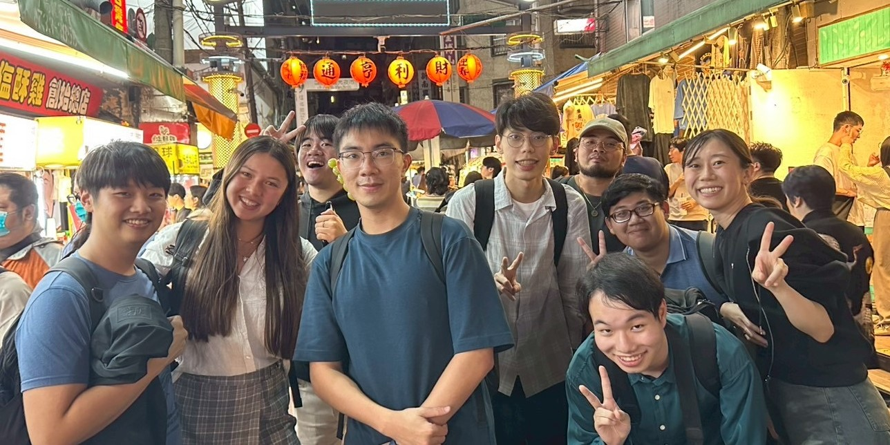

About Me

I am a Vietnamese student currently studying astronomy and astrophysics in Taiwan. I am interested in learning how galaxies formed and evolved using computational and observational techniques. Coming from a computer science background, I am also drawn to the usage of machine learning and deep learning to accelerate scientific discovery.
Aside from work, I enjoy traveling with friends, listening to music (mainly Japanese songs, check out my highly-unorganized sometimes-updated playlist), and watching anime (my favourite is 宇宙よりも遠い場所 - A Place Further than the Universe). I recently finished 鋼の錬金術師 - Fullmetal Alchemist: Brotherhood, which was honestly quite a blast!
Education
- 2026 - present: MSc. in Astronomy and Astrophysics, National Tsing Hua University, Taiwan
- 2021 - 2025: BSc. in Information Technology, Vietnam National University
Research Interests
Galaxy Formation and Evolution, Black Holes, Gravitational Lensing, Extragalactic Astrophysics, Astroinformatics, Computational and Data-Intensive Astrophysics, Machine Learning and Deep Learning for Science